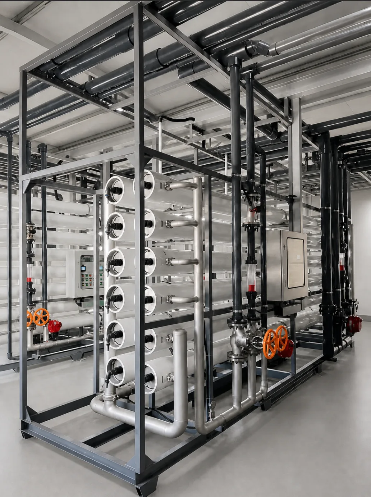

01
What it is
An RO system uses pressure and membranes to divide feed water into purified water and concentrate. It can be skid-mounted or containerized.
Single Stage RO & Double Stage RO
Konche reverse osmosis systems are designed for dependable purified-water production in industrial and commercial applications. Pressure-driven membrane separation reduces dissolved salts, suspended impurities and other contaminants in feed water.
Discuss Your Requirement ↗
KONCHE reverse osmosis systems: single- and double-pass RO plants rejecting 97–99% of dissolved salts at 0.25–500 m³/h — pure water, reuse and ultrapure-feed duties, with a stage-comparison guide.
Next step: Share your project inputs · Compare applications
Stable, reliable, high-quality purified water — with lower energy consumption and operating costs.
From industrial process water to higher-purity applications, Konche specifies each RO system around raw-water analysis, required permeate quality, capacity, recovery target, voltage and control requirements.
An RO system uses pressure and membranes to divide feed water into purified water and concentrate. It can be skid-mounted or containerized.
Pretreated water passes through a security filter and high-pressure pump before entering the membrane modules. Dosing and cleaning help protect membrane life.
Food and beverage, pharmaceuticals, electronics, boilers, mining, general industry, drinking water and desalination.
Suitable systems typically remove 97–99% of dissolved salts. Feed-water conditions directly affect product-water quality and membrane life.
Brackish-water systems typically use 0.8–1.5 kWh/m³. Seawater treatment requires more energy.
Operating costs include electricity, chemicals, cartridges and membrane replacement. Feed-water quality and required output determine the final project cost.
An industrial reverse osmosis (RO) system is a pressure-driven membrane plant that separates dissolved salts, organics and microorganisms from feed water. The permeate serves process, drinking, reuse and higher-purity feed duties. Single-stage KONCHE systems document 97–99% nominal salt rejection with permeate conductivity up to 10 μS/cm. The standard range spans 0.25–500 m³/h at 65–85% recovery. Brackish-water configurations typically use 0.8–1.5 kWh/m³; seawater duties require more energy. Double-stage systems polish permeate toward ≤3 μS/cm for electronics, semiconductor, pharmaceutical and high-purity process water, and are a common feed stage ahead of EDI. Pretreatment — multi-media filtration, activated carbon, softening and 5 μm security filtration — plus membrane selection, PLC control and post-treatment are matched to the verified water analysis and the intended process. Two plants with the same flow rating can therefore carry different designs. KONCHE configures single stage RO for general purified-water duties and Double Stage RO when a lower conductivity target is required.
A single stage RO system is suitable when one membrane separation pass can meet the required water quality. Typical applications include industrial process water, food and beverage water, commercial drinking water purification and agricultural water treatment.
A Double Stage RO system adds a second membrane stage to further reduce conductivity and improve permeate quality. It can be paired with optional EDI, UV sterilization or final filtration as required.
Available options include pretreatment, automatic flushing, PLC control, online conductivity, flow and pressure monitoring, and material choices for different operating environments.
Industrial pure water, food and beverage process water, drinking water purification, boiler-related water preparation, cleaning and rinsing water, and pretreatment for higher-purity water systems.
Same-caliber comparison of the two RO configurations KONCHE configures. Every value is a reference range documented on the linked product page and applies to the stated feed conditions, not a project guarantee.
| Comparison dimension | Single stage RO | Double stage RO |
|---|---|---|
| Nominal desalination | 97–99% | 97–99% overall across both stages |
| Product-water reference | Conductivity ≤10 μS/cm | Conductivity ≤3 μS/cm |
| Capacity range | 0.25–500 m³/h | 0.25–500 m³/h configured to the duty |
| Recovery reference | 65–85% | ≥75% total in suitable designs |
| Typical applications | Process water, boiler make-up, food and beverage water, drinking-water projects, pretreatment for higher-purity systems | Electronics, semiconductors, pharmaceuticals, food and chemicals; common feed stage ahead of EDI or mixed-bed polishing |
| Limitations to plan for | One membrane stage; high feed TDS or targets below 10 μS/cm favor a Double Stage RO | Higher energy use and capital cost; more complex operation and maintenance |
| Choose when | The destination standard accepts single-stage permeate quality | The process requires ≤3 μS/cm or stable low-conductivity feed for downstream polishing |
Decision guidance: If the outlet standard accepts up to 10 μS/cm permeate, single stage RO is the simpler and more economical configuration. When the target is ≤3 μS/cm, or the water feeds EDI and polishing stages, double stage RO is the standard choice. KONCHE confirms the pass configuration against the verified feed-water report during proposal review.
Reference values verified against the linked product pages · Updated 19 August 2026
Raw water passes through pretreatment (multi-media filtration + activated carbon + softening) and enters the stage-1 RO high-pressure pump, where the stage-1 reverse osmosis membranes remove more than 95% of dissolved salts, and stage-1 permeate flows into an intermediate tank. The stage-2 high-pressure pump feeds this permeate into the stage-2 RO membranes for deep desalination, and stage-2 permeate with conductivity ≤3 μS/cm enters the pure water tank. Stage-2 concentrate returns to the stage-1 feed inlet for recycling, and the water is delivered to points of use after UV sterilization.
Send your raw-water report, required output and local power standard. Konche will recommend a suitable single stage RO or Double Stage RO system.
Get Expert Support ↗